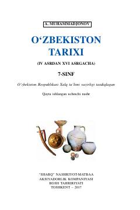

OTIV–XVI asrlar O'zbekiston tarixiga bag'ishlangan 7-sinf darsligi.
Ushbu darslik IV–XVI asrlar oralig'idagi O'zbekiston tarixini, ijtimoiy-siyosiy va iqtisodiy o'zgarishlarni, shuningdek, yurtimizdan yetishib chiqqan buyuk mutafakkirlar merosini yoritadi. 7-sinf o'quvchilari uchun mo'ljallangan ushbu ta'limiy nashrda qadimgi davlatlar va o'rta asrlar tarixi batafsil bayon etilgan.